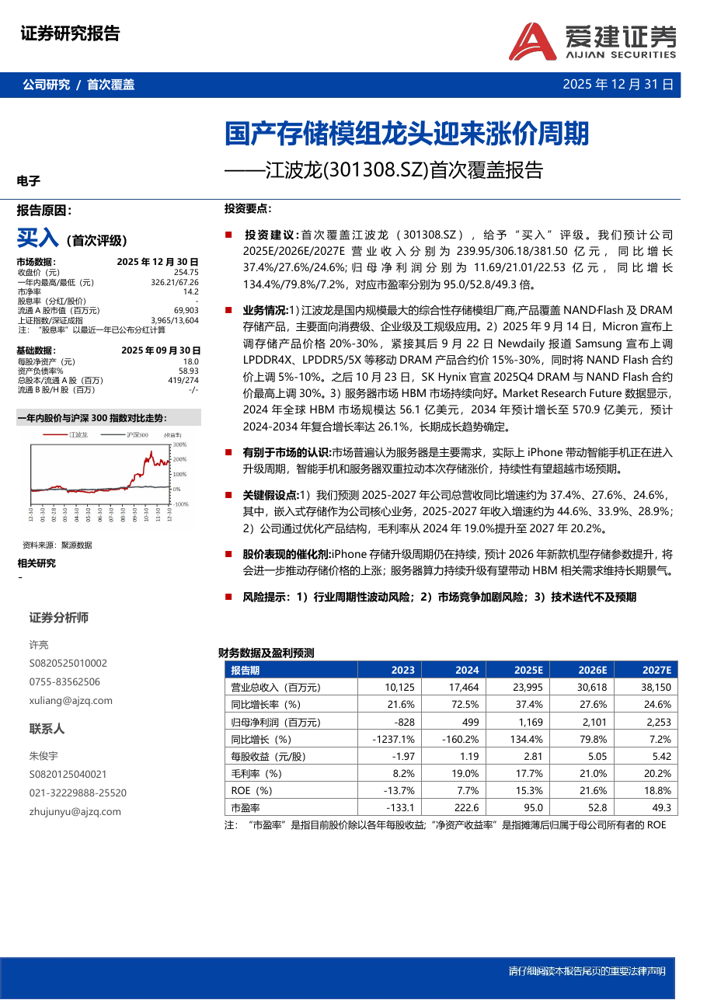

LivingFin · Technical Method Brief
从券商研报
到 TCEG
如何把事实、数字、分析结论与证据路径，转化为可验证、可持续维护的金融研究图状态。


→
PDF → CANONICAL GRAPH
LivingFin · Technical Method Brief
如何把事实、数字、分析结论与证据路径，转化为可验证、可持续维护的金融研究图状态。

PDF → CANONICAL GRAPH